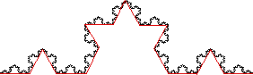

| Continue: between each pair of points, add three more points. This gives a collection of sixteen segments, each of length 1/9 |
| Taken together, the collection has length L2 = 16/9 = (4/3)2. |
|  |
| By now we should see the general pattern. |
Return to Ineffective Ways to Measure.